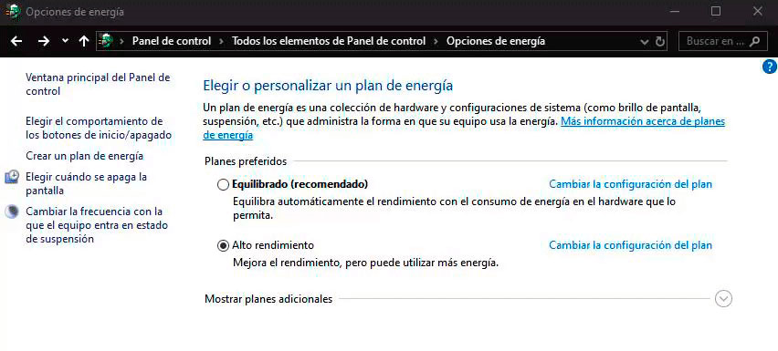
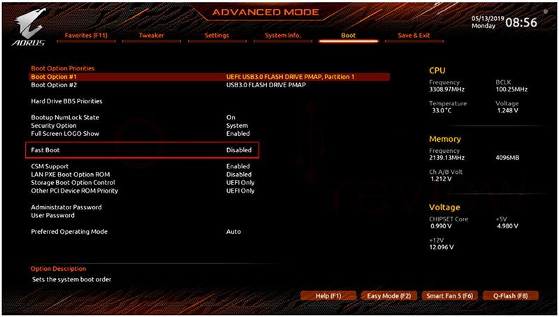

Modo inicio rapido
Esta no es una causa de apagado sino de reinicio del equipo incluso antes de arrancar por completo. Un posible culpable sea el modo inicio rápido que tienen las BIOS UEFI integrado y activado por defecto en algunos casos.
Desactivación desde Windows
El acceso en cuestión consistirá en abrir Opciones de energía > Elegir el comportamiento de los botones de inicio/apagado > Cambiar configuración actualmente disponible. Desactivaremos el modo de inicio rápido, opción ubicada en la mitad inferior.

Desactivación desde BIOS
Si no podemos entrar en Windows de ninguna manera, nos queda el acceso directo a la BIOS. Para ello pulsaremos la tecla que corresponda (Supr, F2, F12, etc) durante el encendido del equipo, y encontraremos la opción de modi de inicio rapido en el apartado de Boot posiblemente.
